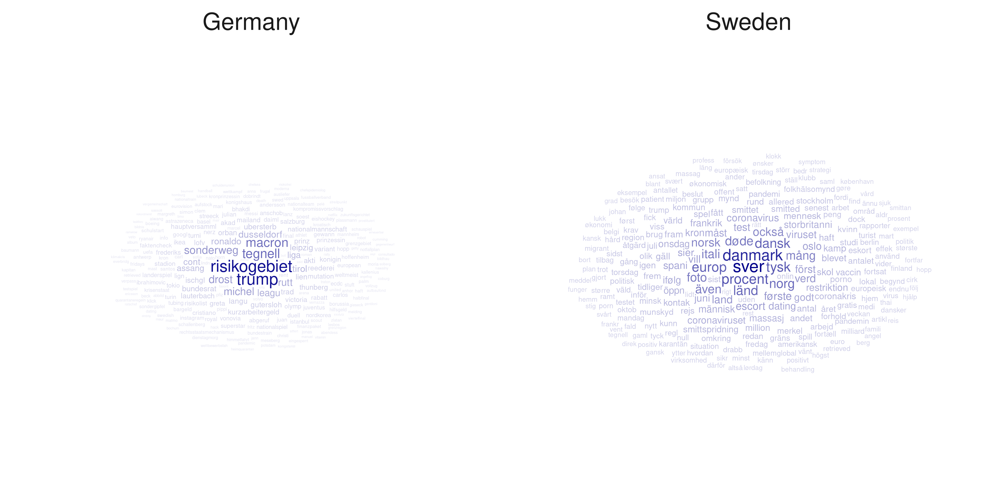
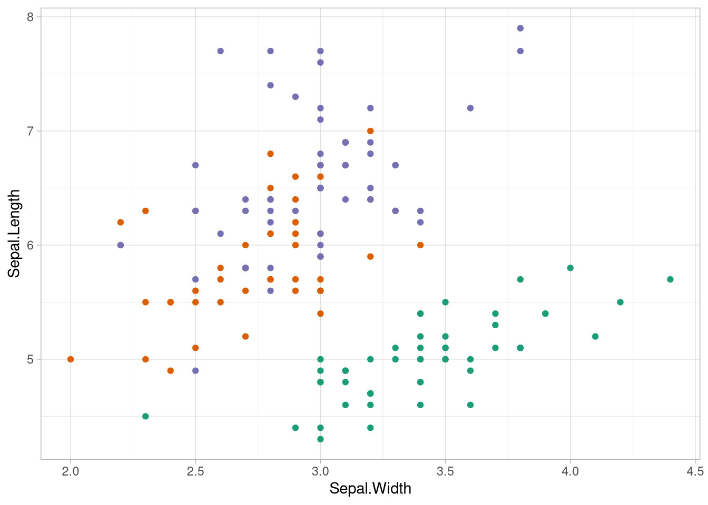
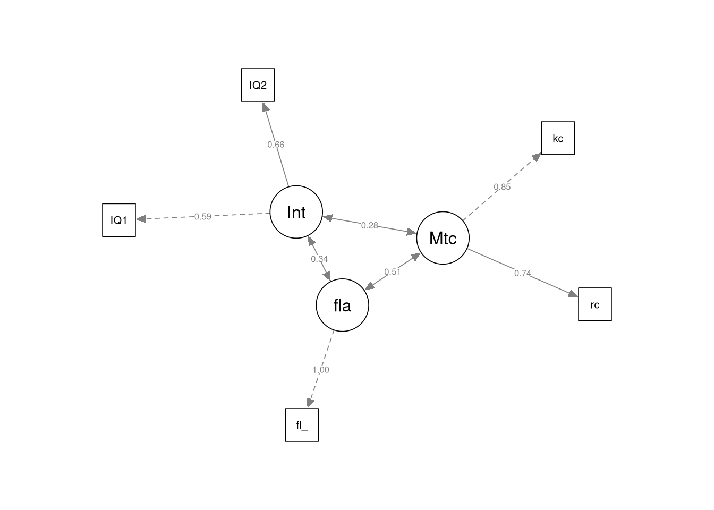

Appendix
Nützliche Pakete
Rmarkdown
Das Rmarkdown - Biotop ist das Ergebnis des Versuchs, die Hürde zur Kommunikation von Datenanalysen so gering wie möglich zu gestalten.
Mit der Hilfe der zugehörigen Pakete lassen sich in einer sehr einfachen Syntax schnell Code-Stücke aus inzwischen 6 Programmiersprachen mit Freitext und untereinander kombinieren und in einem Dokument verbinden. Dieses Dokument lässt sich dann dank Pandoc in einer Vielzahl von Formaten exportieren.
Um den Kern von Rmarkdown ist ein riesiger Apparat an Erweiterungen entstanden, die den Funktionsumfang zu einem sehr mächtigen Tool zur Dokumenterstellung anwachsen lassen. Dieses Skript ist zum Beispiel vollständig in Rmarkdown geschrieben.
Um ein Dokument zu erstellen muss man einfach auf “neues Dokument” \(\rightarrow\) R Markdown klicken und schon kann man anfangen.
Mit Paketen wie Bookdown, Shiny, Plotly und Blogdown lassen sich auch sehr attraktive interaktive Dokumente erstellen, die Beispielsweise direkt als Website nutzbar sind.
Wo kann ich dazu mehr erfahren?
Xie, Allaire, and Grolemund (2020) bieten hier ein frei zugängliches gitbook mit Antworten zu allen Fragen, die man zum Standard-markdown haben kann.
Yihui Xie, einer der Autoren, ist auch der Autor von bookdown und blogdown, seine Bücher dazu lassen sich auch empfehlen.
skimr
glimpse und summary sind zwar ganz nett, da ein guter Überblick über die vorliegenden Daten aber entscheidend für den Erfolg jeder Datenanalyse ist, sind mehr dargestellte Informationen nur im Ausnahmefall unerwünscht.
Das skimr-Paket mit seiner skim-Funktion bietet fast alle Informationen, die man sich nur irgendwie wünschen kann.
skimr::skim(iris)| Name | iris |
| Number of rows | 150 |
| Number of columns | 5 |
| _______________________ | |
| Column type frequency: | |
| factor | 1 |
| numeric | 4 |
| ________________________ | |
| Group variables | None |
Variable type: factor
| skim_variable | n_missing | complete_rate | ordered | n_unique | top_counts |
|---|---|---|---|---|---|
| Species | 0 | 1 | FALSE | 3 | set: 50, ver: 50, vir: 50 |
Variable type: numeric
| skim_variable | n_missing | complete_rate | mean | sd | p0 | p25 | p50 | p75 | p100 | hist |
|---|---|---|---|---|---|---|---|---|---|---|
| Sepal.Length | 0 | 1 | 5.84 | 0.83 | 4.3 | 5.1 | 5.80 | 6.4 | 7.9 | ▆▇▇▅▂ |
| Sepal.Width | 0 | 1 | 3.06 | 0.44 | 2.0 | 2.8 | 3.00 | 3.3 | 4.4 | ▁▆▇▂▁ |
| Petal.Length | 0 | 1 | 3.76 | 1.77 | 1.0 | 1.6 | 4.35 | 5.1 | 6.9 | ▇▁▆▇▂ |
| Petal.Width | 0 | 1 | 1.20 | 0.76 | 0.1 | 0.3 | 1.30 | 1.8 | 2.5 | ▇▁▇▅▃ |
ez
Das ez-Paket stellt eine wesentliche Verbesserung der R-Syntax zur Auswertung faktorieller Experimente dar.
Als kleines Beispiel eine abhängige zweifaktorielle Varianzanalyse auf Basis des in ez mitgelieferten ANT-Datensatzes, der simulierte Ergebnisse des Attention Network Tests beinhalted.
library(ez)## Registered S3 methods overwritten by 'lme4':
## method from
## cooks.distance.influence.merMod car
## influence.merMod car
## dfbeta.influence.merMod car
## dfbetas.influence.merMod cardata(ANT)
skimr::skim(ANT)| Name | ANT |
| Number of rows | 5760 |
| Number of columns | 10 |
| _______________________ | |
| Column type frequency: | |
| factor | 6 |
| numeric | 4 |
| ________________________ | |
| Group variables | None |
Variable type: factor
| skim_variable | n_missing | complete_rate | ordered | n_unique | top_counts |
|---|---|---|---|---|---|
| subnum | 0 | 1 | FALSE | 20 | 1: 288, 2: 288, 3: 288, 4: 288 |
| group | 0 | 1 | FALSE | 2 | Con: 2880, Tre: 2880 |
| cue | 0 | 1 | FALSE | 4 | Non: 1440, Cen: 1440, Dou: 1440, Spa: 1440 |
| flank | 0 | 1 | FALSE | 3 | Neu: 1920, Con: 1920, Inc: 1920 |
| location | 0 | 1 | FALSE | 2 | dow: 2880, up: 2880 |
| direction | 0 | 1 | FALSE | 2 | lef: 2880, rig: 2880 |
Variable type: numeric
| skim_variable | n_missing | complete_rate | mean | sd | p0 | p25 | p50 | p75 | p100 | hist |
|---|---|---|---|---|---|---|---|---|---|---|
| block | 0 | 1 | 3.50 | 1.71 | 1.0 | 2.00 | 3.50 | 5.00 | 6.0 | ▇▃▃▃▃ |
| trial | 0 | 1 | 24.50 | 13.85 | 1.0 | 12.75 | 24.50 | 36.25 | 48.0 | ▇▇▇▇▇ |
| rt | 0 | 1 | 406.91 | 70.55 | 179.6 | 356.24 | 404.99 | 454.49 | 657.7 | ▁▅▇▃▁ |
| error | 0 | 1 | 0.10 | 0.30 | 0.0 | 0.00 | 0.00 | 0.00 | 1.0 | ▇▁▁▁▁ |
klassische Vorgehensweise in base R
anova <- aov(rt ~ cue * flank + Error(subnum), data = ANT)
summary(anova)##
## Error: subnum
## Df Sum Sq Mean Sq F value Pr(>F)
## Residuals 19 85489 4499
##
## Error: Within
## Df Sum Sq Mean Sq F value Pr(>F)
## cue 3 5523668 1841223 698.350 < 2e-16
## flank 2 7871119 3935559 1492.703 < 2e-16
## cue:flank 6 79837 13306 5.047 3.58e-05
## Residuals 5729 15104697 2637
##
## cue ***
## flank ***
## cue:flank ***
## Residuals
## ---
## Signif. codes:
## 0 '***' 0.001 '**' 0.01 '*' 0.05 '.' 0.1 ' ' 1ANOVA mit ez
ANT %>%
ezANOVA(
dv = rt,
wid = subnum,
within = .(cue,flank)
)## Warning: Collapsing data to cell means. *IF* the
## requested effects are a subset of the full design,
## you must use the "within_full" argument, else
## results may be inaccurate.## $ANOVA
## Effect DFn DFd F p
## 2 cue 3 57 540.862407 7.988172e-42
## 3 flank 2 38 1066.037656 4.196305e-34
## 4 cue:flank 6 114 4.357093 5.356773e-04
## p<.05 ges
## 2 * 0.87793881
## 3 * 0.91110583
## 4 * 0.09416982
##
## $`Mauchly's Test for Sphericity`
## Effect W p p<.05
## 2 cue 0.8431739 0.69690404
## 3 flank 0.7999302 0.13411237
## 4 cue:flank 0.1378186 0.03419366 *
##
## $`Sphericity Corrections`
## Effect GGe p[GG] p[GG]<.05
## 2 cue 0.9016877 6.126025e-38 *
## 3 flank 0.8332849 8.590878e-29 *
## 4 cue:flank 0.5956263 4.652864e-03 *
## HFe p[HF] p[HF]<.05
## 2 1.0657965 7.988172e-42 *
## 3 0.9037852 4.869100e-31 *
## 4 0.7506166 2.015937e-03 *Wo kann ich dazu mehr erfahren?
Die Dokumentation von ez ist ziemlich gut.
ggwordcloud
Für eher qualitative Darstellungen von Textdaten sind wordclouds manchmal ganz nett, das ggwordcloud-Paket kombiniert diesen Anspruch mit den Anpassungsmöglichkeiten von ggplot2.
Ein kleines Beispiel sind diese wordclouds, die auf einem Datensatz basieren, der die Berichterstattung über Corona in Schweden und Deutschland aus dem jeweils anderen Land abbildet:
summary(stories)## word translation
## Length:500 Length:500
## Class :character Class :character
## Mode :character Mode :character
##
##
##
##
## sentiment n country
## Min. :-5.0000 Min. : 440 Germany:250
## 1st Qu.:-1.5000 1st Qu.: 698 Sweden :250
## Median : 1.0000 Median : 1656
## Mean : 0.4639 Mean : 1989
## 3rd Qu.: 2.0000 3rd Qu.: 2405
## Max. : 5.0000 Max. :15223
## NA's :445Diesen Datensatz wollen wir jetzt als eine wordcloud pro Nation darstellen:
library(ggwordcloud)
stories %>%
ggplot(aes(size = n,
label = word,
alpha = n)) +
geom_text_wordcloud(rm_outside = T,
color = 'darkblue') +
facet_grid(~country) +
theme_minimal()
Wo kann ich dazu mehr erfahren?
Die Vignette von ggwordcloud bietet ein paar schöne Beispiele, an denen man sich gut entlang hangeln kann.
Zum Öffnen nach dem Laden des Pakets einfach so aufrufen:
vignette('ggwordcloud')plotly
Plotly ist ein nicht nur in R implementiertes Software-Paket, dass es mit wenigen Schritten ermöglicht, interaktive Grafiken zu erstellen.
Wir können das, was wir für ggplot gelernt haben, einfach für plotly anwenden:
library(plotly)##
## Attaching package: 'plotly'## The following object is masked from 'package:ggplot2':
##
## last_plot## The following object is masked from 'package:stats':
##
## filter## The following object is masked from 'package:graphics':
##
## layoutp <- iris %>%
ggplot(aes(x = Sepal.Width,
y = Sepal.Length,
color = Species)) +
geom_point() +
theme_light() +
theme(legend.position = 'none')
p
Um den Graphen interaktiv zu gestalten reicht es, ihn an ggplotly zu übergeben:
ggplotly(p)Wo kann ich dazu mehr erfahren?
Wenn komplexere Grafiken gewünscht sind, ist die plotly-Website eine gute Ressource um anzufangen.
Für die meisten Anwendungsfälle reicht es aber aus, den Graphen mit ggplot zu erstellen und den automatischen Port zu verwenden.
lavaan
Das lavaan-Projekt und das zugehörige Paket ist in den Worten der Entwickler:
The lavaan package is developed to provide useRs, researchers and teachers a free open-source, but commercial-quality package for latent variable modeling. Von der lavaan-Homepage
Und kann inzwischen genutzt werden um so gut wie jedes Modell zur Analyse latenter Variablen aufzustellen, zu schätzen und zu testen.
Das Paket ist so umfrangreich, dass wir es hier nur in anekdotischer Art besprechen können, wir gehen aber ein Beispiel für ein SEM durch.
Wir versuchen die Auswertung aus Pishghadam and Khajavy (2013) mit lavaan nachzuvollziehen. Die Autoren berichten dankenswerterweise Korrelationsmatrizen und Streuungen, daraus können wir uns einfach die folgende Kovarianzmatrix bauen:
| IQ1 | IQ2 | Total Intelligence | kc | rc | total_metacognition | fla_test | |
|---|---|---|---|---|---|---|---|
| IQ1 | 7.95 | 3.62 | 8.79 | 4.60 | 5.28 | 9.96 | 3.45 |
| IQ2 | 3.62 | 10.82 | 11.10 | 8.26 | 7.70 | 16.27 | 4.22 |
| Total Intelligence | 8.79 | 11.10 | 26.11 | 12.83 | 13.15 | 27.07 | 7.75 |
| kc | 4.60 | 8.26 | 12.83 | 157.50 | 185.01 | 261.53 | 31.46 |
| rc | 5.28 | 7.70 | 13.15 | 185.01 | 547.56 | 512.42 | 53.20 |
| total_metacognition | 9.96 | 16.27 | 27.07 | 261.53 | 512.42 | 1247.50 | 84.43 |
| fla_test | 3.45 | 4.22 | 7.75 | 31.46 | 53.20 | 84.43 | 33.99 |
Als nächsten Schritt laden wir lavaan und formulieren das Modell nach, das die Autoren aufgestellt haben:
library(lavaan)## This is lavaan 0.6-7## lavaan is BETA software! Please report any bugs.my_model <- '
## Definiton latenter Variablen:
Intelligence =~ IQ1 + IQ2
Metacognition =~ kc + rc
fla =~ fla_test
# Korrelationen
Intelligence ~~ Metacognition
fla ~~ Intelligence
fla ~~ Metacognition
'Das Gesamtmodell, die Stichprobengröße von 143 und die Kovarianzmatrix übergeben wir jetzt an sem:
sem_example <- sem(
my_model,
sample.cov = cov_mat,
sample.nobs = 143)
summary(sem_example, standardized = TRUE)## lavaan 0.6-7 ended normally after 142 iterations
##
## Estimator ML
## Optimization method NLMINB
## Number of free parameters 12
##
## Number of observations 143
##
## Model Test User Model:
##
## Test statistic 1.790
## Degrees of freedom 3
## P-value (Chi-square) 0.617
##
## Parameter Estimates:
##
## Standard errors Standard
## Information Expected
## Information saturated (h1) model Structured
##
## Latent Variables:
## Estimate Std.Err z-value
## Intelligence =~
## IQ1 1.000
## IQ2 1.313 0.548 2.399
## Metacognition =~
## kc 1.000
## rc 1.641 0.289 5.669
## fla =~
## fla_test 1.000
## P(>|z|) Std.lv Std.all
##
## 1.654 0.589
## 0.016 2.172 0.663
##
## 10.581 0.846
## 0.000 17.363 0.745
##
## 5.810 1.000
##
## Covariances:
## Estimate Std.Err z-value
## Intelligence ~~
## Metacognition 4.852 2.545 1.907
## fla 3.287 1.371 2.397
## Metacognition ~~
## fla 31.557 6.618 4.768
## P(>|z|) Std.lv Std.all
##
## 0.057 0.277 0.277
## 0.017 0.342 0.342
##
## 0.000 0.513 0.513
##
## Variances:
## Estimate Std.Err z-value
## .IQ1 5.161 1.278 4.037
## .IQ2 6.030 2.064 2.921
## .kc 44.446 18.448 2.409
## .rc 242.250 55.573 4.359
## .fla_test 0.000
## Intelligence 2.736 1.327 2.061
## Metacognition 111.955 25.044 4.470
## fla 33.751 3.992 8.456
## P(>|z|) Std.lv Std.all
## 0.000 5.161 0.654
## 0.003 6.030 0.561
## 0.016 44.446 0.284
## 0.000 242.250 0.446
## 0.000 0.000
## 0.039 1.000 1.000
## 0.000 1.000 1.000
## 0.000 1.000 1.000Mit fitmeasures(sem_example) können wir uns die gängigsten fit-Indizes und noch ein paar mehr ausgeben lassen:
fitmeasures(sem_example)## npar fmin
## 12.000 0.006
## chisq df
## 1.790 3.000
## pvalue baseline.chisq
## 0.617 141.806
## baseline.df baseline.pvalue
## 10.000 0.000
## cfi tli
## 1.000 1.031
## nnfi rfi
## 1.031 0.958
## nfi pnfi
## 0.987 0.296
## ifi rni
## 1.009 1.009
## logl unrestricted.logl
## -2325.277 -2324.382
## aic bic
## 4674.555 4710.109
## ntotal bic2
## 143.000 4672.139
## rmsea rmsea.ci.lower
## 0.000 0.000
## rmsea.ci.upper rmsea.pvalue
## 0.116 0.735
## rmr rmr_nomean
## 1.154 1.154
## srmr srmr_bentler
## 0.019 0.019
## srmr_bentler_nomean crmr
## 0.019 0.023
## crmr_nomean srmr_mplus
## 0.023 0.019
## srmr_mplus_nomean cn_05
## 0.019 625.194
## cn_01 gfi
## 907.160 0.995
## agfi pgfi
## 0.975 0.199
## mfi ecvi
## 1.004 0.180Und mit dem semPlot-Paket lässt sich das Modell auch darstellen:
semPlot::semPaths(sem_example,
what = 'path',
whatLabels = 'std',
layout = 'spring',
residuals = F)## Registered S3 methods overwritten by 'huge':
## method from
## plot.sim BDgraph
## print.sim BDgraph
Wo kann ich dazu mehr erfahren?
Zum Lernen von lavaan stellen die Autoren hier einen großen Pool an Materialien zur Verfügung.
Für das semPlot-Paket sind die Ressourcen leider nicht so gut, die Dokumentation der semPaths-Funktion ist aber ziemlich gut, zu finden nach dem Laden des Pakets mit ?semPaths.
Andere Ressourcen
Cheatsheets
RStudio stellt eine ganze Reihe von hilfreichen Spickzetteln zu Verfügung, die den workflow effizienter macen indem sie die wichtigsten Funktionen auf einen Blick übersichtlich machen. Die Cheatsheets finden sich hier
Exemplarisch für die bisher besprochenen Pakete sind die folgenden Cheatsheets zu empfehlen:
Bücher
Wenn man tiefer in tidy data analysis mit R einsteigen möchte kommt man an den Büchern von Hadley Wickham (Autor von ggplot2 und Chief Scientist bei RStudio) nicht vorbei. Die wichtigsten sind frei online zugänglich, dabei sind besonders die folgenden zu empfehlen:
R for Data Science (Grolemund and Wickham 2017)(https://r4ds.had.co.nz/) für die Grundlagen und
Advanced R (Wickham 2019a)(https://adv-r.hadley.nz/) für fortgeschrittenere Themen